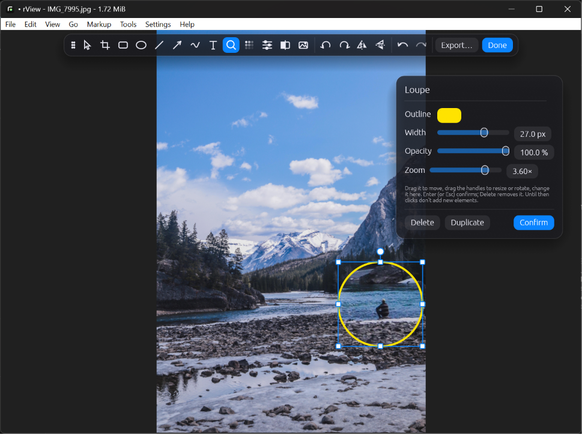

Markup
Point at the detail that matters.
Shapes, arrows, text, a loupe and redactions on top of the image. Each one stays editable, and the original file is never touched.
- CtrlShiftA
- Open Markup
- Enter
- Confirm the object
- CtrlZ
- Undo any step